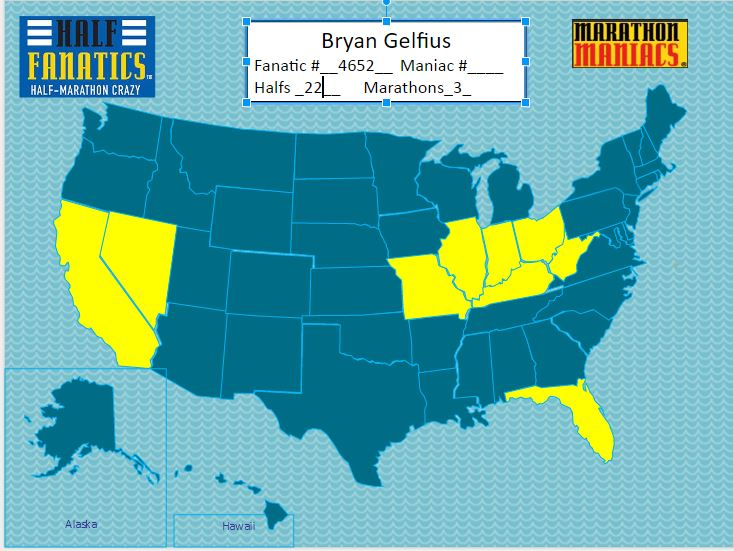

My Story
Running was not something this nerd always did; but in 2010 I decided to try and run a half marathon. The Indianapolis Mini Marathon was one of largest and since it was close I decided that would be my one and only half marathon. So began my journey into the world of running. After months of training I managed to complete the run in two hours and twenty-one minutes. Since then I've run 21 more half marathons and 3 full marathons. So far my fastest time is one hour and fifty-four minutes.States in which I've raced
